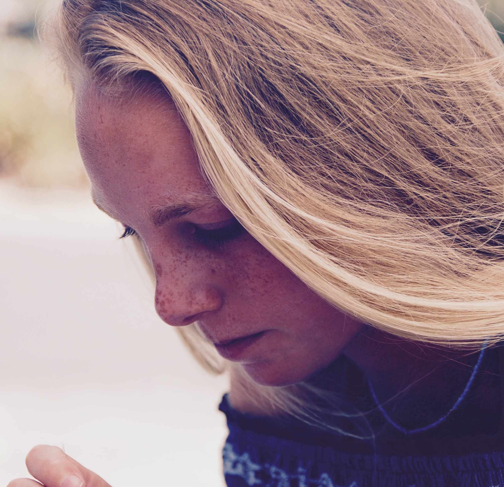

Unique jewelry born and raised in Marin

Founded on the idea that jewelry could be worn while surfing, hiking or doing yoga, the Siena-B collection is designed to become an inspirational part of the woman wearing it.
When Siena started her brand over seven years ago, it was founded on one teeny turquoise necklace strung on silk. Based on the idea that jewelry could be athletic and feminine, the Siena-B collection is designed as a symbol of celebration,
love and creativity - a way for every woman to reflect on how she would like to present herself.
After working out of her home in Marin, the time finally came to share her own creative vision - by launching her website, Siena-B.com. Making jewelry has been a part of Siena's life since learning to make pieces with her mom in their kitchen
at the age of seven. Whether it was stringing beads like she did at Montessori school or traveling to jewelry trade shows, Siena has always had a critical eye and a passion for making beautiful things.
As an young adult, Siena originally made pieces that were selling well at a local store. The brand started as a way for Siena to not only bring a little bling to a bikini, but also fill a void for women who wanted to be embellished while doing
outdoor activities.
She began with super simple stones in the best materials, but always kept the styles clean. Making pieces that shared Siena's philosophy on life - be unique, be true to yourself and others and always shine. Siena has a strong creative power
and real interest in modernizing the jewelry industry.
Today, she still hand makes every piece in her Marin home. She believes that your personal style should be effortless, that sophistication is sexy, and that everything is undoubtedly more hip when it's worn with a smile.